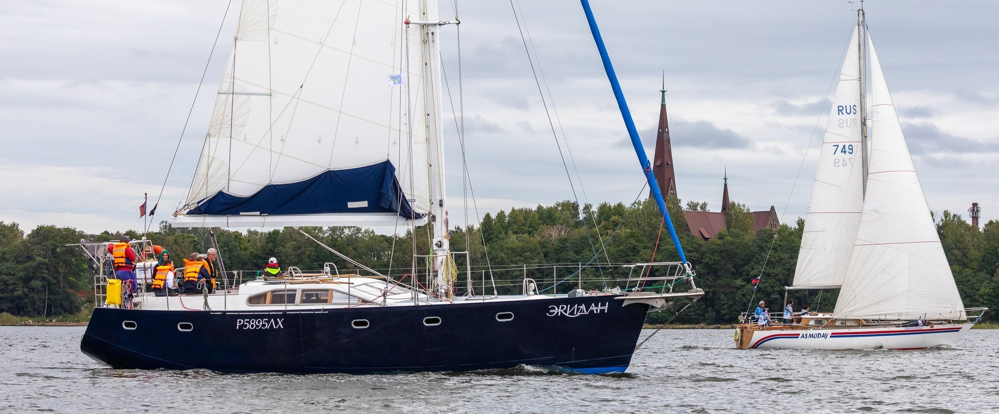
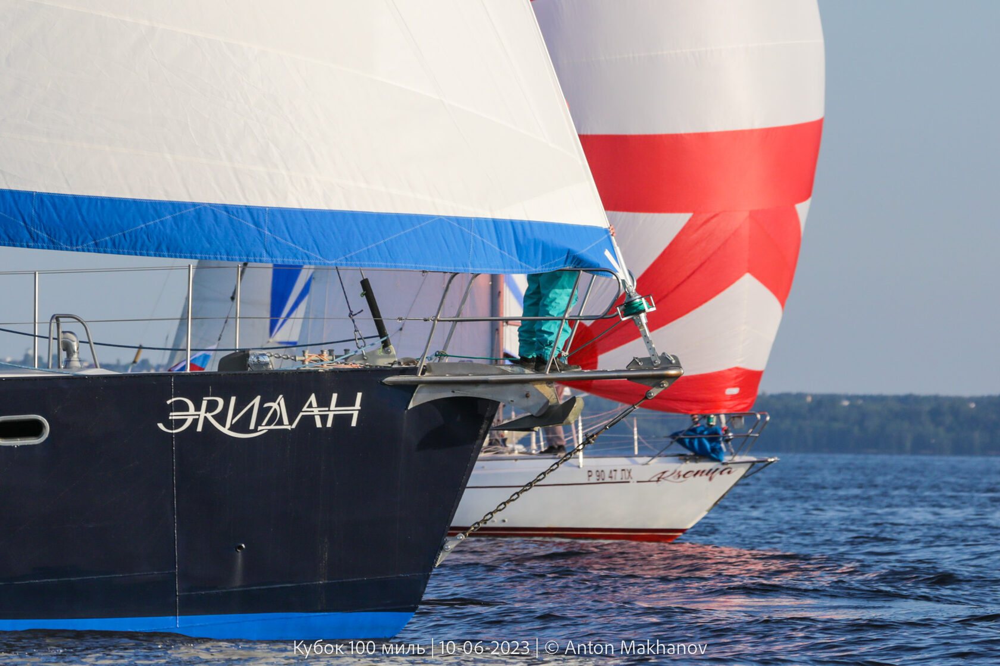
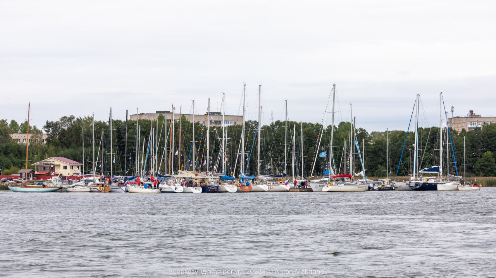
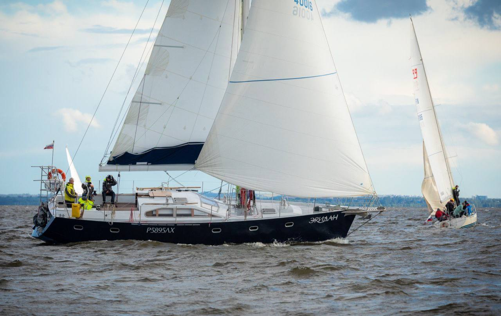
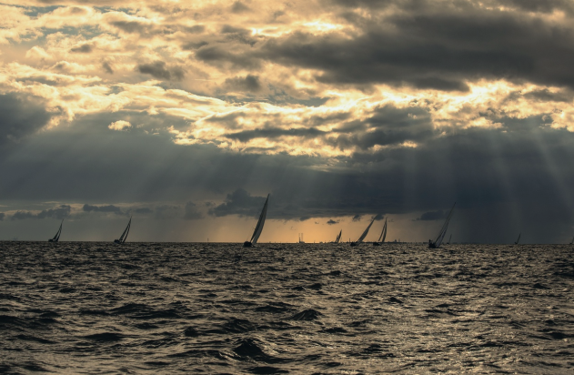

25 июня - 12 июляПоход в г. Калининград и обратно
Сайт организаторов: https://sailingbaltic.ru/

май – сентябрьМесто постоянной дислокации яхты

Яхта «Эридан» построена в июне 2021 года по проекту Voyager DS 440 в Петербурге. Материалом корпуса была выбрана сталь, парусное вооружение – шлюп.
«Эридан» планировался как судно, рассчитанное на кругосветное путешествие, поэтому при его проектировании важно было учесть определенные особенности.
Читать историю
Для любого яхтсмена полезно задуматься о предвидении опасных ситуаций, и о том, как выбраться из них, если всё таки оказался вовлечен.
В течении ряда лет мы собирали информацию о происшествиях с яхтами на море, разбирали и осмысливали эти случаи, добавляя свои, чтобы прийти к хорошей морской практике.
Все статьи